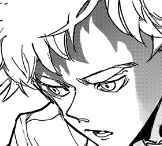

Chapter 5.3 - Assurance
Annoyed by everything he was, you listen to your insane thought and swallow the green contents of the potion - you could feel something change within your body but not see the physical change.
Enraged, he tries to slice you in half with his massive, sharp claws but filled with hatred, you stare him down trying to subdue him and to your surprise, it works!
"NO NO NO NO NO! WHAT HAVE YOU DONE?!"
Now you are in control while he is powerless before you. But, so many questions, was this really the right thing to do? You look over to the real Nicholas and see his shocked face.
"What have I done..." you whisper to yourself.
Fake Nicholas notices this and takes advantage of your weakness. 
"That's right. What have you done? Nicholas didn't want it to be that way. You've failed him and your entire family! The king will know that you are actually his dau-"
Nicholas shoots his eye underneath his mask and he dies on the spot. He comes over.
"You'll be fine..." he says with a hopeless look while resting his hand on your shoulder.
He begins to reveal everything about Fake Nicholas and the demons. How he truly was his twin brother and your half-brother. How he ran away years ago at night to be part of the demons which mother cried about so much. 
"He came to me one time and demanded for a potion to turn into a demon. And I only figured out the half-part so I gave it to him and now he has the audacity to take that from father? He's on his death-bed and thats how he repays my kindness?"
While Nicholas kept chattering, your whole world spins and your eyes tremble before hitting the ground hard. One thing you do know, this is the first time he's ever opened up and you're grateful for that.
To be continued...
There's more choices to select and more truth to be revealed.